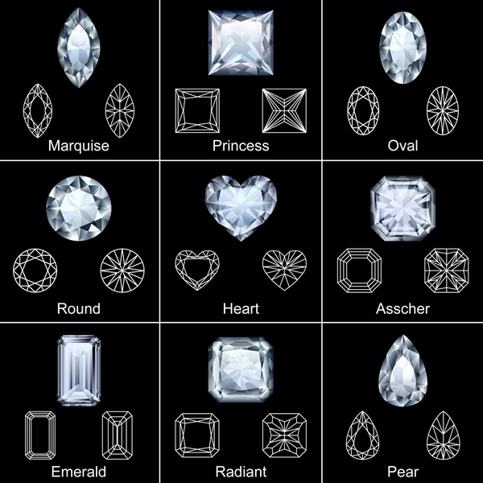

Manufacturing:
The first step in the diamond making process, marking is done after examining each rough diamond to decide how it should be cut to yield the greatest value. The shape of the rough diamond and the number and location of inclusions, or blemishes, are first considered. Since the crystalline structure of diamond causes it to have a grain, it is critical to plan for the facets of the diamond to be made in the correct direction. Taking these factors into account, the planner decides how the diamond should be cut and marks it to indicate where the stone be cleaved or sawed.
